Slide transcript#
I am working on finding ways to increase accessibility of the beamer slides provided. The following is an automatically generated transcript from the pdf of the slides but is still not perfect. I would be happy to hear feedback on how this transcript can be improved for additional usefulness.
Lecture 1 - Introduction & Topology Basics#
Syllabus#
Available on the course website: elizabethmunch.com/cmse890
Schedule & Office hours
Slack
Prerequisites:
Linear Algebra
Some programming experience
Python, jupyterhub, and engineering DECS accounts
Homework
Present a problem assigned in the previous class
Approximately twice during the semester
Goal: Present on something not in your expertise
Textbook#
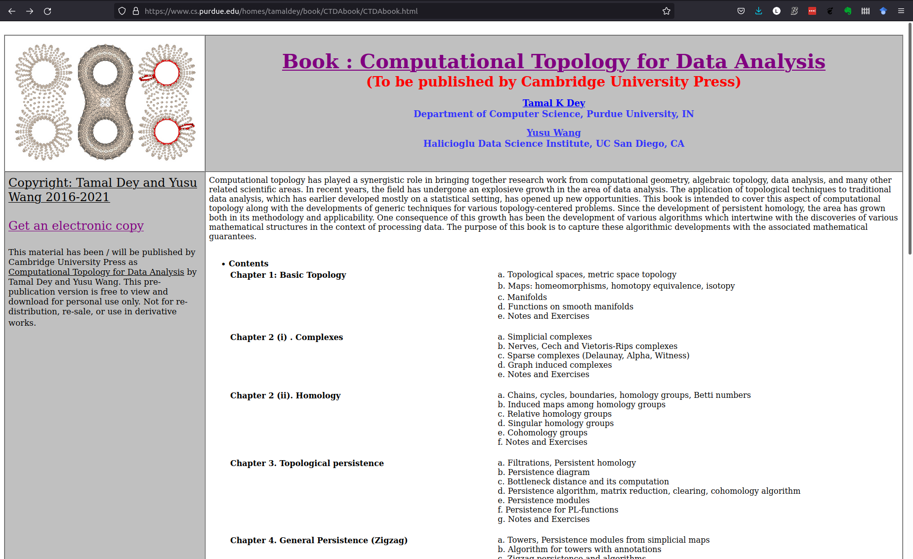
IntroductionsName
Department/Program
Research interest
Non-work interest
Topological Data Analysis#
Shape in data#
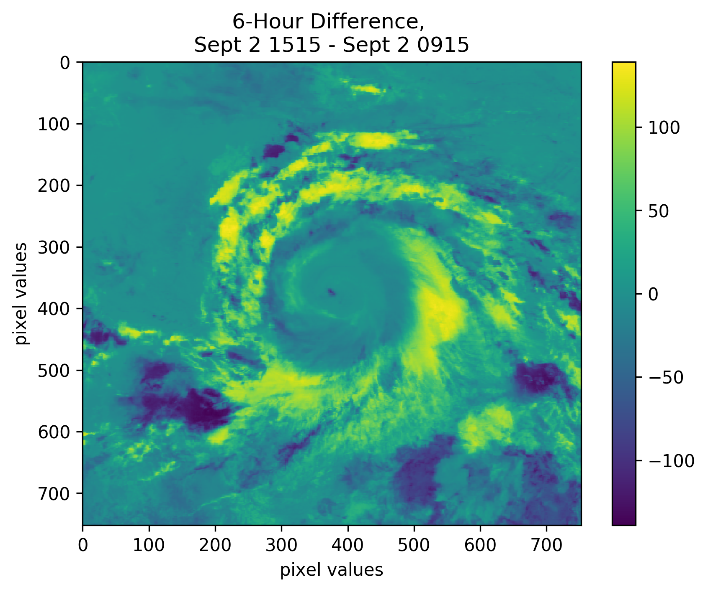
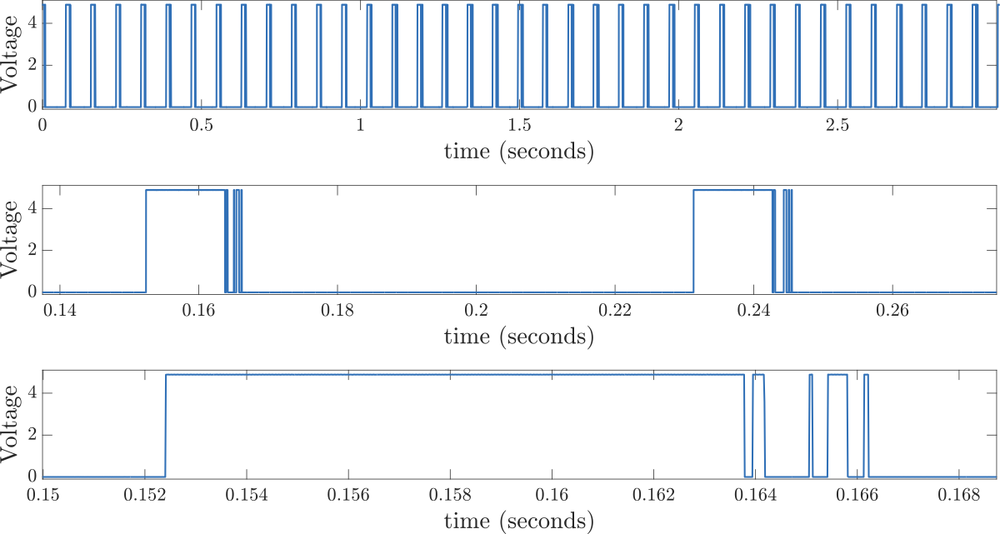
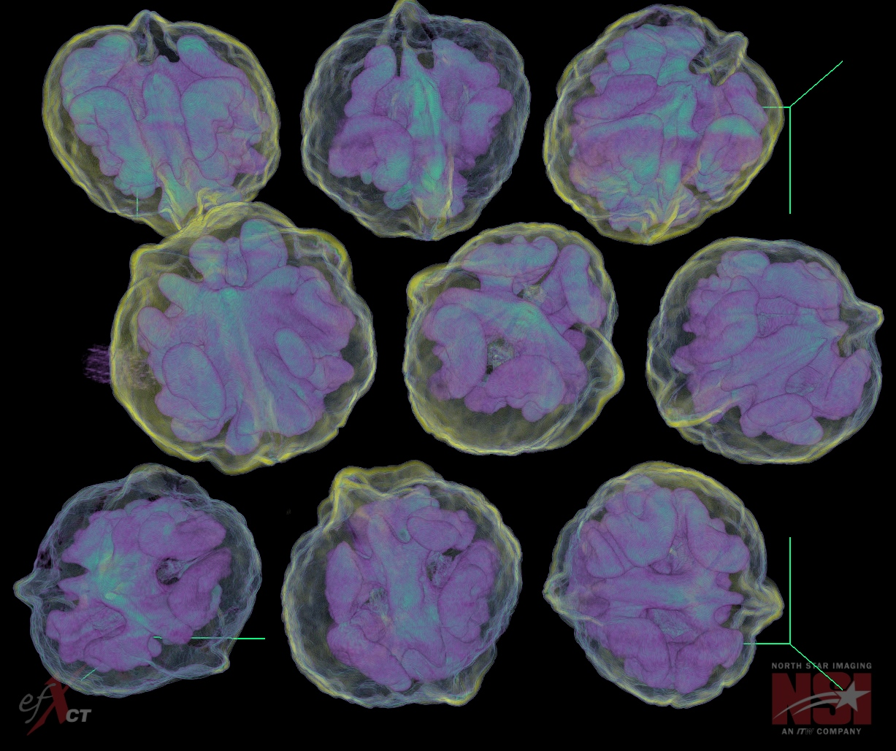
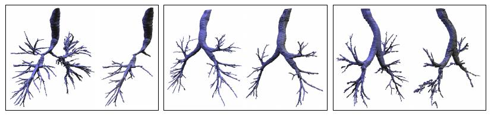
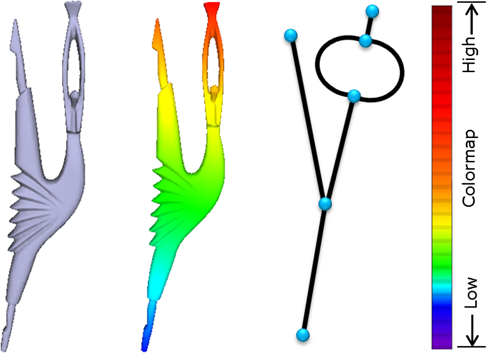
Images: Wikipedia, Szymczak et al., Ma et al.
<1-2>
Topological Data Analysis (TDA)#
 Raw Data
X-ray CT
Point Clouds
Networks
Topological Summary
Persistence Diagrams
Euler Characteristic Curves
Mapper graphs
Raw Data
X-ray CT
Point Clouds
Networks
Topological Summary
Persistence Diagrams
Euler Characteristic Curves
Mapper graphs
Analysis Statistics Machine Learning
What is topology?#
Topology \(\neq\) Topography Mathematical study of spaces preserved under continuous deformations
stretching and bending
not tearing or gluing

Study of the shape and features of the surface of the Earth
Images: Wikipedia
History Pt 2#
Esoteric field of study 1700-2000
Algebraic topology
Applications/intersections with dynamical systems
Would never be considered “applied” in traditional sense.
Topology, the pinnacle of human thought. In four centuries it may be useful.
Alexander Solzhenitzin, “The First Circle” 1968
Things change ca.2000
Introduction of Persistent Homology
History#
Leonhard Euler (1707-1783)

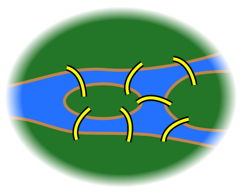
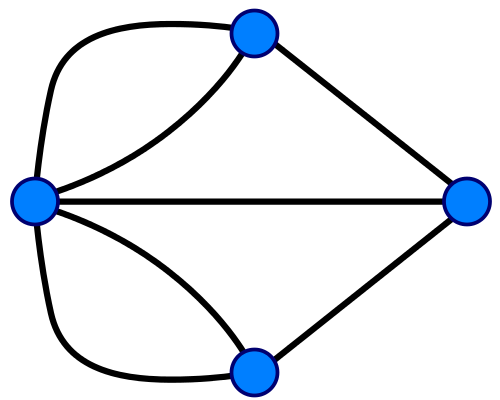
Bridges of Konigsberg
Images: Wikipedia <2>
Topological Invariants- Euler Characteristic#
Images: Wikipedia
Euler characteristic as topological signature
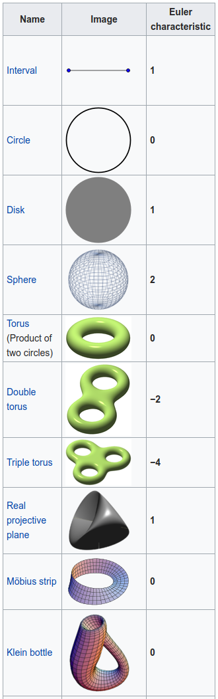
Different Euler characteristics mean spaces must be topologically differentDifferent spaces might have the same Euler characteristics Euler characteristic is an example of a topological signature
Quantification vs Representation of Shape#
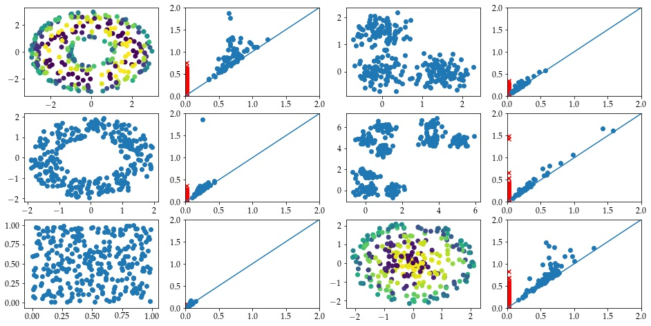
Persistent Homology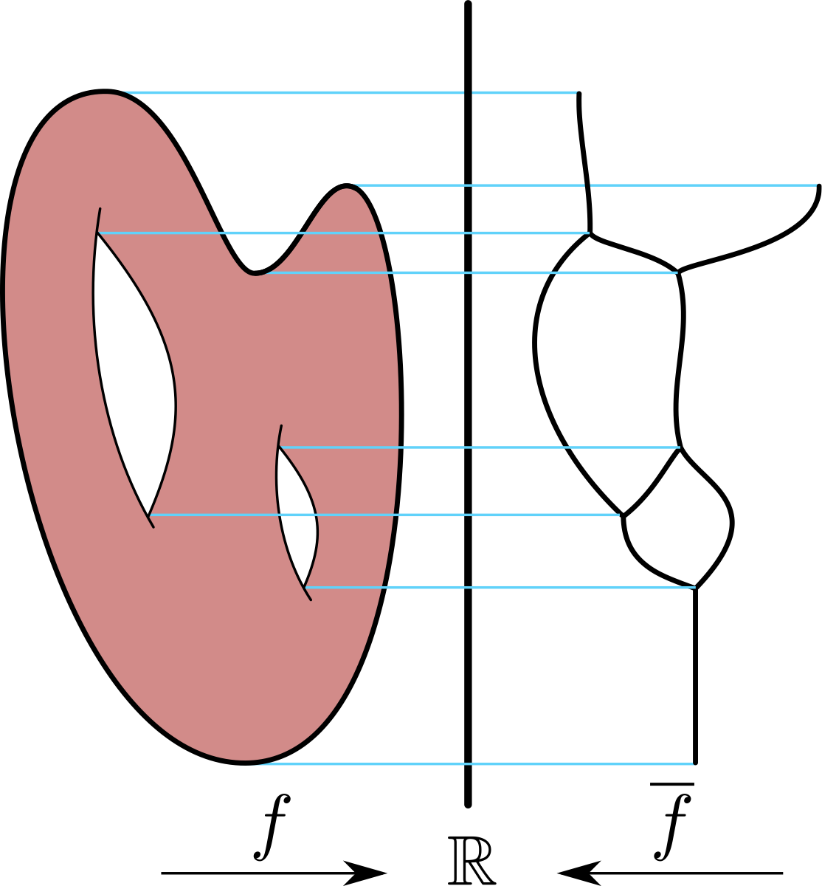
Reeb graph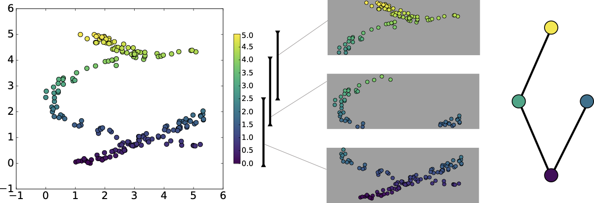
Mapper
Current active research directions#
Multidimensional persistence
Machine learning, statistics
Time series analysis and dynamical systems
Metrics
Parallelization
Visualization
Application areas:
Neuroscience
Plant Biology
Gene expression
Image processing
Sensor networks
Atmospheric science
Goals for this course#
Understand the computation and interpretation of several commonly used tools in TDA
Persistent Homology
Reeb graphs
Mapper
Know what types of data and/or are amenable to TDA methods.
Have experience working with open-source code banks for computation.
Intro to Topology Vocabulary#
Goals of this section#
Cover some basic terms from Ch 1.1, 1.2, 1.3
Depending on your math background, this might be obvious or this might seem impossible. If the latter, spend some time tonight trying some examples! Oh yeah, and read the textbook!
Topology#
Definition: A topological space is a point set \(\mathbb T\) with a set of subsets \(T\) (called open sets) such that
\(\emptyset\), \(\mathbb T\) \(\in T\)
For every \(U \subseteq T\), the union of the sets in \(U\) is in \(T\)
For every finite \(U \subseteq T\), the common intersection of the subsets in \(U\) is in \(T\). Ex. \(\mathbb T= \{a,b,c\}\), \(T = \{ \emptyset, T_1 = \{a\}, T_2 = \{b\}, T_3 = \{a,b\}, \mathbb T= \{a,b,c\} \}\)
Metric - \(L_2\)#
Definition: A metric space is a pair \((\mathbb T,d)\) where \(\mathbb T\) is a set, and \(d: \mathbb T\times \mathbb T\to \mathbb R\) satisfies
\(d(p,q) = 0\) iff \(p=q\)
\(d(p,q) = d(q,p)\) for all \(p,q \in \mathbb T\)
\(d(p,q) \leq d(p,r) + d(r,q)\) for all \(p,q,r \in \mathbb T\) Example: \(\mathbb T= \mathbb R^2\), \(d((a,b), (c,d)) = \sqrt{(c-a)^2 + (b-d)^2}\)
Metric - \(L_\infty\)#
Definition: A metric space is a pair \((\mathbb T,d)\) where \(\mathbb T\) is a set, and \(d: \mathbb T\times \mathbb T\to \mathbb R\) satisfies
\(d(p,q) = 0\) iff \(p=q\)
\(d(p,q) = d(q,p)\) for all \(p,q \in \mathbb T\)
\(d(p,q) \leq d(p,r) + d(r,q)\) for all \(p,q,r \in \mathbb T\) Example: \(\mathbb T= \mathbb R^2\), \(d((a,b), (c,d)) = \max \{|u_1-v_1| , |u_2-v_2|\}\)
Metric Topology#
Definition: Given a metric space \((\mathbb T,d)\), an open metric ball is
The metric topology is the set of all metric balls
Ex. \(\mathbb R\), \(\mathbb R^2\) TRY IT: Draw the subset of \(\mathbb R^2\) contained in \(B_o(0,1)\) for \(d((u_1,u_2),(v_1,v_2)) =\)
\(\| u-v \|_1 = |u_1-v_1| + |u_2-v_2|\)
\(\| u-v \|_2 = \sqrt{(u_1-v_1)^2 + (u_2-v_2)^2}\)
\(\| u-v \|_\infty = \max \{|u_1-v_1| , |u_2-v_2|\}\) Open and closed sets
Definition: A set is open if it is in the topology \(T\). A set is closed if its complement is open. Ex 1. \(\mathbb T= \{a,b,c\}\), \(T = \{ \emptyset, T_1 = \{a\}, T_2 = \{b\}, T_3 = \{a,b\}, \mathbb T= \{a,b,c\} \}\)
Open and closed sets - metric space version
Limit points#
Definition: Let \(Q \subset \mathbb T\) be a point set. A point \(p \in \mathbb T\) is a limit point of \(Q\) if for every \(\varepsilon>0\), \(Q\) contains a point \(q \neq p\) with \(d(p,q) <\varepsilon\).
Open and closed sets - metric space version
Definition:
\(\mathrm{Cl}(Q)\): The closure of a point set \(Q \subseteq \mathbb T\) is the set containing every point in Q and every limit point of \(Q\).
A point set \(Q\) is closed if \(Q = \mathrm{Cl} (Q)\), i.e. \(Q\) contains all its limit points.
Open and closed sets - metric space version
Complement version#
Definition:
The complement of a point set \(Q\) is \(T \setminus Q\).
A point set \(Q\) is open if its complement is closed, i.e. \(T \ Q = \mathrm{Cl} (T \setminus Q)\).
Open cover
Definition: An open (closed) cover of a topological space \((\mathbb T, T )\) is a collection \(C\) of open (closed) sets so that \(T \subseteq \bigcup_{U \in C}\). Ex. \(\mathbb R\), \(C = \{ (n-1,n+1) \mid n \in \mathbb Z\}\) Connected
Definition: A topological space \((\mathbb T, T )\) is disconnected if there are two disjoint non-empty open sets \(U, V \in T\) so that \(T = U \cup V\). A topological space is connected if its not disconnected. Ex. \(A = (1,2) \cup (5,7) \subset \mathbb R\)
Maps#
Homework for next time
Need a volunteer! For this homework, it can’t be someone who is a Math PhD student, preferably someone who hasn’t taken a topology class.
Choose two of the following to present.
DW 1.6.1. Be sure to explain why the constructions you have created are/are not Hausdorff.
DW 1.6.2
DW 1.6.3
DW 1.6.4
DW 1.6.5
DW 1.6.6